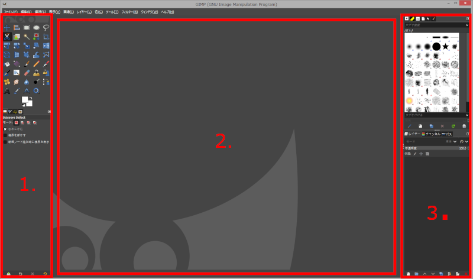

主なウィンドウ
GIMP のウィンドウは、 3 つのパネルで構成されています。 中央に画像ウィンドウがあり、左右からはツールボックスとドックが挟みこんでいます。

- ツールボックス
- 上部は各種ツール起用のアイコン群
- 下部はツールの調整用ダイアログ
- 画像ウィンドウ
- 画像編集用のウィンドウ
- ドック
- 上部はブラシ、パターン、フォントなど
- 下部はレイヤー、チャンネル、パス
Warning
GIMP のヘルプは、主なウィンドウを 5 つに分けて説明しています。
ヘルプでは、左パネルのツールボックスは、上部をツールボックス、下部をツールオプションとし、
ドックは、上部を「 The Brushes, Patterns, Fonts, Document History dock 」（未翻訳）、下部を「Layers, Channels, Paths」（未翻訳）と呼んでいます。
本サイトでは、便宜上 3 つのパネルに分け、ツールボックスとドックは、必要に応じて上部・下部と呼び分けることとします。
用語一覧
| 用語 | 英語 | 意味 |
|---|---|---|
| ツールボックス | tool box | GIMP のウィンドウの左にあるパネル。ツールアイコン群が並ぶ |
| 画像ウィンドウ | image window | GIMP のウィンドウの中央にあるパネル。ここで画像を直接編集する |
| ドック | dock | GIMP のウィンドウの右側のパネル。上下に分かれており、それぞれ複数のダイアログを格納する |